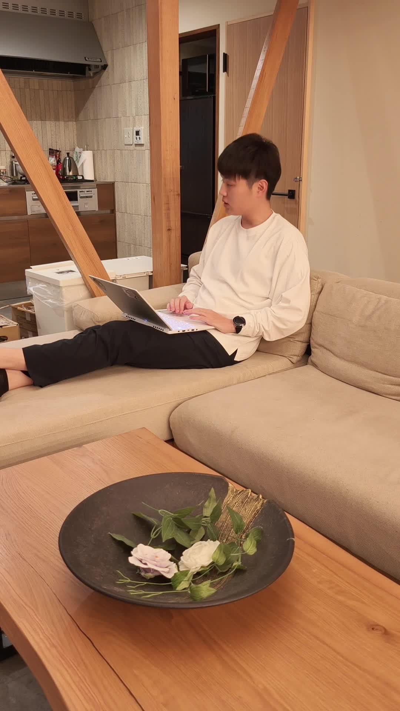

すみっち式 自分の言葉で書くAI note実践ガイド
まず、できあがりを見る
完成例｜AI議事録を整えるnote
AI議事録は
「誰に・何を・どんな形で」
正直、まず3つ決めておくといいよ。
調べる→型→強み→構成→文体
1記事を5本選ぶ
同じ読者・同じ悩みで、5本選んでください。自分の記事にも、型を使いやすくなりますよ。
無料で読める部分から、URLと気づきをメモしておきます。
この工程の指示文を開く
誰の、どんな悩みを扱うかを決め、noteで同じ悩みを扱う記事を5本探してください。無料で公開されているタイトル・導入・見出しを確認し、URLと、読者に約束している変化を1行ずつメモしてください。本文の言い回しや有料部分は転用しません。 読者：【誰に向けた記事か】 悩み：【一つに絞る】 テーマ：【自分が書けること】 販売件数が公開されていなければ「売れている」とは断定せず、価格表示・反応・読者の悩みなど観察できた事実を分けてください。
2無料部分から型を抜く
選んだ5本の無料部分
ChatGPTへ「この4つに分けて」
売れてる理由具体的な時短成果
タイトル用途と出力を具体化
冒頭読者の悩み
見出し課題 → 解決 → 実例
中身は、自分の経験から作っていくんです。
この工程の指示文を開く
以下は、同じ読者の悩みを扱うnote5本の無料公開部分のメモです。文章は転用せず、①売れていると考えられる理由（確認できる事実と仮説を分ける）②タイトル③冒頭④見出し、の順で「伝え方の型」を整理してください。 各項目に、そう判断した元の記事を対応づけてください。情報が足りない項目は不明のままにします。最後に、5本で共通する型と、自分の記事で試すなら何を残すかを1案にまとめてください。 【ここに5本のURL・タイトル・無料部分の自分のメモを入れる】
310問で強みを見つける
10問のうちの1問得意な業務は？
ここに、自分の経験を入れる
強みの整理例現場で使える手順にする失敗例から説明する初心者向けに言い換える
その強み、どの回答から出てきましたか？自分の経験と合っているか、見てみてください。
この工程の指示文を開く
私の経歴と得意なことについて、具体的に答えやすい質問を10個出してください。まだ強みや実績は作らず、質問だけを出してください。 私が10個に回答した後、記事にできる独自の強みを3つ、根拠になった回答番号と一緒に整理してください。その強みで、どんな読者のどんな悩みを扱えるかも添えてください。未回答の経歴・成果・失敗・感情を補わず、不足は質問してください。
4見出しを先に決める
見出し10案の一部
- AI議事録で失敗する原因
- 整形前に決める3つのこと
- 誰が読む議事録なのか
選んだ順番で本文へ
AI議事録で失敗する原因
会議メモをそのままAIへ渡すと、必要な結論や次の行動が埋もれることがあります。

先に構成を選ぶと、話がブレにくいんですよね。
この工程の指示文を開く
②で整理した型と、③で私の回答から抽出した強みを使い、【テーマ】の記事の見出し案を10個出してください。読者は【読者】、解決したい悩みは【悩み】です。今は本文を書かないでください。 私が採用する見出しと順序を返した後、その構成を変えずに本文を作ってください。事実が足りないところは質問し、体験・数字・発言を作らないでください。無料で読める導入では、誰の何が変わる記事かを伝え、有料部分には実践に使う具体物・手順・確認方法を置いてください。 【②の型】 【③の強みと根拠】
5自分の言葉へ直す
整える前
3つを決めましょう。
自分の言葉へ
正直、まず3つ
決めておくといいよ。
意味や事実は変えずに、言い方を整えてくださいね。
この工程の指示文を開く
次の記事から「〜しましょう」「いかがでしたか」など、定型的に聞こえる表現を抜き出してください。元の意味と事実は変えず、友達に話すような自然な言い方へ直してください。 次に、私が普段使う口癖を自然な場所へ加えてください。すべてを無理に詰め込まず、言い方を直した場所と、意味が変わっていない理由を別に示してください。新しい経歴・体験・成果は追加しません。 口癖1：【自分の言い方】 口癖2：【自分の言い方】 口癖3：【自分の言い方】 【本文をここに貼る】
Codexへまとめて任せる
自分の材料調査メモ・10問の回答
選んだ構成・口癖
→選んだ構成・口癖
Codex5つの工程を進め
記事をファイル保存
記事をファイル保存
工程は任せても、構成は自分で選んでください。最後に「05_最終記事.md」を開いて確認します。
ZIPを展開 → 入力メモを記入 → 指示を送る
実践ファイルを保存PC用ZIP。「最初に読む.txt」を開きます。
まとめて渡す指示文を開く
このフォルダの入力メモ.mdとプロンプト5本を使い、noteの記事を1本、Markdownで作ってください。 最初に入力メモを読み、不足する事実を質問してください。調査メモ→型の整理→回答から強み3つ→見出し10個→私が構成を選ぶ→本文→文体調整、の順に進めます。 構成の選択前は本文に進まないでください。私が採用した構成を返したら、その構成で最後まで仕上げてください。 私の経歴・体験・数字・実績・口癖は作らず、記事の文章を他者から転載しないでください。 出力フォルダに 01_型.md、02_強み.md、03_構成.md、04_本文.md、05_最終記事.md、確認事項.md を保存してください。 確認事項には出典と、私が確認する点を分けて残してください。未確認点を本文の事実として断定しないでください。 noteやSNSへの投稿、公開、外部送信、課金は行わず、ローカル保存までで止めてください。
フォルダの開き方・保存されるもの
- 「実践ファイルを保存」からZIPを保存して、展開してください。
- ChatGPTのデスクトップアプリでローカルプロジェクトを作り、展開したフォルダを追加します。
- そのプロジェクトで新しいチャットを開き、入力メモを記入してから「まとめて渡す指示文」を送ります。
構成案が出たら、採用する見出しと順序を返します。完成後はフォルダ内の「05_最終記事.md」を開いて確認します。
公式OpenAIドキュメント：ローカルプロジェクト01_型.md ／ 02_強み.md ／ 03_構成.md ／ 04_本文.md ／ 05_最終記事.md
noteに下書きを保存する
無料部分誰の何が変わる？
有料部分実例・手順・使えるもの
本文をnoteへ貼って、まずは下書き保存です。販売前に、有料ラインと価格も決めておいてください。
noteの保存・有料ラインの操作
自分の材料で、まず1本。
ワークに自分の経験を入れて、1本仕上げてみてください。
実践ワークを開く